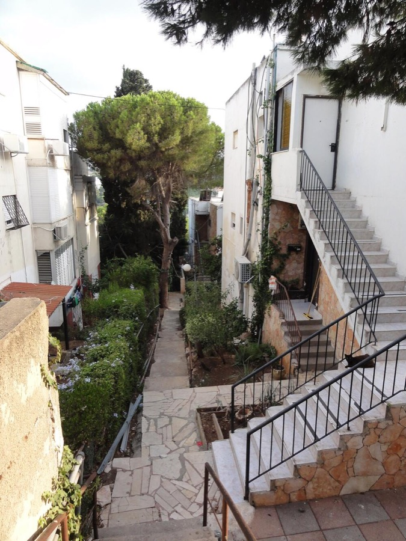

רכישה ומכירה של דירותBuying and selling homes
דירות יד שנייה ודירות קבלן.Resale homes and new-build apartments.
קונספט לדוגמה שנבנה עבור עו״ד דנה נוימן-רייף · זה אינו האתר הרשמי של העסקA sample concept built for Adv. Dana Neuman-Reif · This is not the business’s official website
מלווה עסקאות מקרקעין לאורך כל הדרך, מהמשרד בדרך פרויד 39, חיפה.Guiding property deals from start to finish, from her office at 39 Freud Road, Haifa.
הפורטרט, הלוגו והשיש מתוך האתר של המשרדPortrait, logo and marble from her office’s website
עורכת דין, נוטריון ומגשרת, עם משרד בחיפה שמתמחה במקרקעין.Attorney, notary and mediator, with an office in Haifa that focuses on real estate.
״שוק הנדל״ן עתיר בירוקרטיה, מיסים ותהליכים שאינם ידידותיים לאדם מן היישוב. בשביל זה אנחנו כאן.״“The property market is heavy with bureaucracy, taxes and processes that are not friendly to ordinary people. That is what we are here for.”
12+
שנים כעורכת דין, נוטריון ומגשרתyears as an attorney, notary and mediator
5.0
85 ביקורות בגוגל85 Google reviews
שירותי נוטריוןNotary services

מקרקעין ומיסוי מקרקעין, צוואות וירושות, ייפוי כוח מתמשך ונוטריון.Real estate and property tax, wills and inheritance, lasting power of attorney and notary work.
דירות יד שנייה ודירות קבלן.Resale homes and new-build apartments.
ליווי דיירים בפרויקט בבניין שלהם.Representing residents in a project on their building.
רכישה משותפת וחלוקה של מגרשים.Buying together and dividing plots.
תכנון מס בעסקה ודיווח לרשויות המס.Tax planning in the deal and reporting to the tax authority.
כולל רישום נכס על פי צו ירושה.Including registering property under an inheritance order.
כולל מכירה של דירה שהתקבלה בירושה.Including selling an apartment received as an inheritance.
ממנים מראש מי יפעל בשמכם, אם יהיה בכך צורך.Choosing in advance who will act for you, if it is ever needed.
חתימה וחותמת של נוטריון.A notary’s signature and seal.
1 / 8
ליווי לאורך כל העסקה, בשפה פשוטה.Alongside you through the whole deal, in plain language.
״ליוותה אותנו לאורך כל תהליך רכישת הדירה בצורה מקצועית, יסודית ונעימה… הסבירה כל דבר בסבלנות ובשפה פשוטה, ודאגה שנבין בדיוק על מה אנחנו חותמים.״
“She guided us through the whole process of buying our apartment in a professional, thorough and pleasant way… She explained everything patiently and in plain language, and made sure we understood exactly what we were signing.”
״דנה ניהלה את שתי העסקאות בצורה מקצועית, מסודרת ומתוכננת היטב. כל שלב בתהליך היה ברור ומאורגן.״
“Dana handled both deals in a professional, organised and well-planned way. Every stage of the process was clear and organised.”
״התהליך היה יעיל, יסודי ומקצועי. עשתה הכל כדי שנבין במדויק כל שלב בתהליך והכל בסבלנות ואורך רוח מיוחד.״
“The process was efficient, thorough and professional. She did everything so we would understand each stage exactly, all with special patience.”
״ליוותה אותי בכמה עסקאות של מכירה וקנייה, וכל פעם מחדש קיבלתי שירות מקצועי, יסודי ואכפתי ברמה הגבוהה ביותר.״
“She guided me through several sales and purchases, and every time I received professional, thorough and caring service of the highest level.”
״מפגינה מקצועיות גבוהה, יסודיות ויחס אישי ומכבד… ממליץ עליה בלב שלם לכל מי שמחפש ייצוג אמין ואיכותי.״
“Shows great professionalism, thoroughness and a personal, respectful manner… I recommend her wholeheartedly to anyone looking for reliable, high-quality representation.”
רכישה ומכירה של דירות יד שנייה ושל דירות קבלן, קבוצות רוכשים, קרקעות, שכירות והעברה ללא תמורה.Buying and selling resale and new-build apartments, buyer groups, land, rentals and transfers without consideration.
כן. ליווי דיירים בפרויקטים של התחדשות עירונית.Yes. Representing residents in urban renewal projects.
המשרד מטפל ברישום נכס על פי צו ירושה ובמכירה של דירה שהתקבלה בירושה.The office handles registering a property under an inheritance order and selling an apartment received as an inheritance.
רשויות המס, רמ״י (המנהל), חברות משכנות כמו שקמונה ועמידר, ורשויות נוספות.The tax authorities, the Israel Land Authority, housing companies such as Shikmona and Amidar, and other authorities.
כן. ייצוג קטינים וחסויים בהליך של קנייה או מכירה.Yes. Representing minors and wards in a purchase or a sale.
המשרד בחיפה, בימים א׳–ה׳.The office in Haifa, Sunday to Thursday.